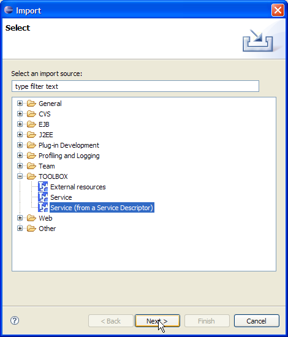
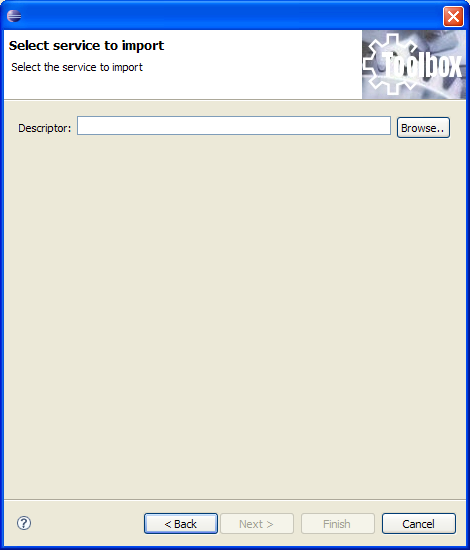

Starting from TOOLBOX RE 7.0, a service can be exported and imported using a zip package as a descriptor. The old XML service descriptor cannot be used to import services. In order to not rebuild them from scratch a wizard has been added to the TOOLBOX DE to provide a convertion between the two descriptors.
To open the import wizard select "Import" from the "File" menu. Select "TOOLBOX/Service (from a Service Descriptor)" item and click "Next".

A new page is shown. There the XML descriptor can be selected through the file browsing functionalities. The figure below shows the wizard page.

Clicking on "Finish" the import process is started and the service is created on the workspace. From now on the servie can be exported as described here.